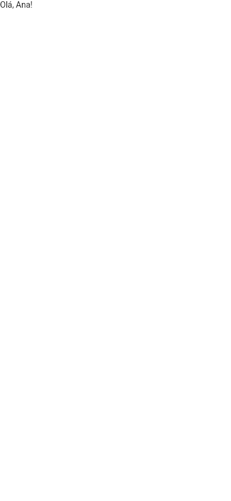
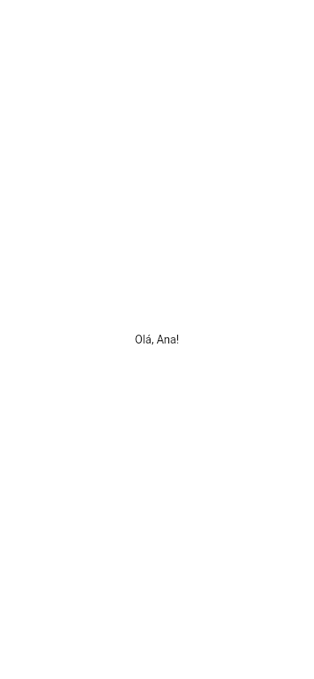
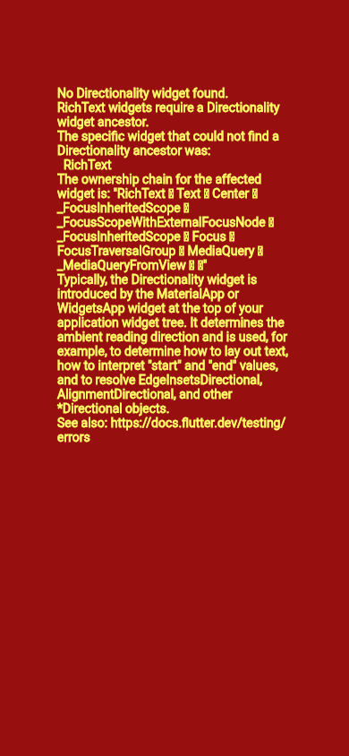
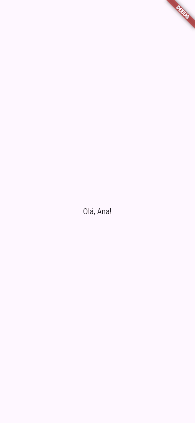

Flutter runApp: seu primeiro app
O flutter create entrega um app pronto, com contador, tema e comentários, e é fácil ficar perdido no meio de tanta coisa. Nesta aula a Ana faz o caminho contrário: apaga tudo do lib/main.dart e escreve um app do zero, uma linha por vez. O ponto de partida é uma função só, o runApp, que pega um widget e o coloca na tela.
- O que é a função
mainnum app Flutter e o que orunAppfaz. - O que é o widget raiz e por que ele ocupa a tela inteira.
- O menor app possível: um
Textsozinho, e por que ele exige uma direção de texto. - A centralizar com
Centere a desenhar a árvore de widgets do seu app. - O jeito de verdade de começar:
MaterialApp+Scaffold. - A separar o app numa classe sua (
MeuApp), o formato que todo o guia usa. - Os erros reais:
No Directionality widget found, orunAppesquecido e oimportque faltou.
Todos os apps desta aula foram compilados com o Flutter estável do laboratório e fotografados numa tela do tamanho de um celular. Cada caixa "Experimente" deixa você mexer no mesmo código (aula O Editor do Guia).
A ideia: ligar o aparelho na tomada
Pense numa televisão nova. Ela pode ter o melhor painel do mundo, mas só mostra alguma coisa quando você liga na tomada e escolhe o canal. Antes disso, é uma caixa preta.
Num app Flutter é igual. Você pode escrever quantos widgets quiser (widget = "peça da tela", aula Tudo é Widget), mas nada aparece até alguém dizer ao Flutter: "este aqui é o app; desenhe-o". Quem diz isso é o runApp.
| Na televisão | No Flutter |
|---|---|
| Apertar o botão de ligar | O sistema chama a função main() |
| Escolher o canal que vai ocupar a tela | runApp(widget): escolhe o widget que vai ocupar a tela |
| O programa que passa no canal | O widget raiz e tudo o que estiver dentro dele |
1. A função main
Você já conhece a main do Dart (aula O Dart que Você Precisa): é por ela que todo programa Dart começa. Num programa de terminal, ela usa print. Num app Flutter, ela tem um trabalho só: chamar o runApp.
import 'package:flutter/widgets.dart';
void main() {
runApp(
const Text(
'Olá, Ana!',
textDirection: TextDirection.ltr,
),
);
}
- import 'package:flutter/widgets.dart';
- Traz para o arquivo as peças básicas do Flutter:
runApp,Text,Center,TextDirection... Sem umimportdo Flutter, o Dart não sabe o que é nenhuma delas. - void main() { ... }
- O ponto de partida. Quando o app abre no celular, o Flutter chama a
main, como em qualquer programa Dart. - runApp( ... )
- "Rode o app": recebe um widget e o coloca na tela. É a ponte entre o seu código e a tela do aparelho.
- const Text('Olá, Ana!', ...)
- O widget que vai para a tela: um texto. Ele é o widget raiz (a raiz da árvore, o primeiro de todos). O
constdiz ao Dart que este widget nunca muda, e o Flutter pode reaproveitá-lo (você vai ver o porquê em StatelessWidget). - textDirection: TextDirection.ltr
- A direção do texto:
ltr= left to right, "da esquerda para a direita", como o português. Em árabe e hebraico se escreve da direita para a esquerda (rtl). Aqui, sem ninguém em volta para avisar a direção, o próprioTextprecisa dela (seção 3).

Funcionou, mas está longe de parecer um app: o texto ficou colado no canto de cima, à esquerda, pequeno, sem barra, sem cor, sem nada. Ninguém pintou o fundo (o branco da foto é o da janela onde o lab abriu o app). E isso é tudo o que você pediu: um texto. O Flutter não acrescenta nada por conta própria.
2. O widget raiz ocupa a tela inteira
Por que o texto foi parar no canto? Porque o widget que você entrega ao runApp, o widget raiz, é obrigado a ocupar a tela inteira. O Text recebeu a tela toda e escreveu as letras a partir do começo dela: o canto de cima, à esquerda.
Para o texto ir para o meio, é preciso outro widget em volta dele, cujo trabalho seja justamente "pôr no meio": o Center. Agora é ele que recebe a tela inteira, e o Text vira o filho dele:
import 'package:flutter/widgets.dart';
void main() {
runApp(
const Center(
child: Text(
'Olá, Ana!',
textDirection: TextDirection.ltr,
),
),
);
}
- Center
- Um widget que não desenha nada: ele só pega o filho e o coloca no meio do espaço que tem. Como ele é o widget raiz, o espaço que ele tem é a tela inteira.
- child:
- "Filho". É o parâmetro onde vai o widget de dentro. Quase todo widget que embrulha um outro usa o nome
child; os que embrulham vários usamchildren("filhos"), como você vai ver em Row e Column. - Text(...)
- O mesmo texto da seção 1, agora como filho do
Center.

Center, o texto foi para o meio da tela.O código virou uma árvore: um widget dentro do outro. Desenhada, a árvore deste app é assim:
runApp
└── Center
└── Text('Olá, Ana!')
Repare na vírgula depois de cada ). Ela é opcional no Dart, mas é um costume forte no Flutter: com a vírgula no fim, o formatador (dart format, que o VS Code roda ao salvar) quebra as linhas de um jeito que deixa a árvore visível no próprio código, um nível de recuo para cada nível da árvore.
Missão: o app vai ser de receitas. Troque o texto do meio da tela para Receitas da Ana.
import 'package:flutter/widgets.dart';
void main() {
runApp(
const Center(
child: Text(
'Olá, Ana!',
textDirection: TextDirection.ltr,
),
),
);
}
import 'package:flutter/widgets.dart';
void main() {
runApp(
const Center(
child: Text(
'Receitas da Ana',
textDirection: TextDirection.ltr,
),
),
);
}
3. Por que o Text pediu a direção?
O Text precisa saber se as letras vão da esquerda para a direita ou ao contrário: sem isso, ele não sabe nem por onde começar a desenhar. Normalmente, quem conta isso a ele é um widget lá de cima da árvore (o MaterialApp, seção 4). Nos exemplos acima não havia ninguém em cima, então a direção teve de ir no próprio Text.
O que acontece se a Ana tirar o textDirection?
import 'package:flutter/widgets.dart';
void main() {
runApp(
const Center(
child: Text('Olá, Ana!'),
),
);
}
O código compila sem reclamar. O problema só aparece com o app rodando: no lugar do texto, a tela inteira fica vermelha, com a mensagem de erro escrita em amarelo:

Essa é a famosa tela vermelha do Flutter. Ela só aparece no modo debug (o modo do flutter run, em que você desenvolve) e mostra o erro ali mesmo, onde o widget deveria estar. As setinhas da mensagem saíram como quadradinhos porque a fonte da tela não tem o símbolo ←; no console elas aparecem certas. O console mostrou a mensagem completa:
══╡ EXCEPTION CAUGHT BY WIDGETS LIBRARY ╞═══════════════════════════════════════════════════════════
The following assertion was thrown building Text("Olá, Ana!", dependencies: [MediaQuery]):
No Directionality widget found.
RichText widgets require a Directionality widget ancestor.
The specific widget that could not find a Directionality ancestor was:
RichText
The ownership chain for the affected widget is: "RichText ← Text ← Center ← _FocusInheritedScope ←
_FocusScopeWithExternalFocusNode ← _FocusInheritedScope ← Focus ← FocusTraversalGroup ← MediaQuery
← _MediaQueryFromView ← ⋯"
Typically, the Directionality widget is introduced by the MaterialApp or WidgetsApp widget at the
top of your application widget tree. It determines the ambient reading direction and is used, for
example, to determine how to lay out text, how to interpret "start" and "end" values, and to resolve
EdgeInsetsDirectional, AlignmentDirectional, and other *Directional objects.
…
════════════════════════════════════════════════════════════════════════════════════════════════════
É a primeira mensagem de erro do guia, então vamos ler por partes:
- EXCEPTION CAUGHT BY WIDGETS LIBRARY
- "Exceção capturada pela biblioteca de widgets": o erro aconteceu enquanto o Flutter montava os widgets.
- thrown building Text("Olá, Ana!", ...)
- Ao construir qual widget: o seu
Text. - No Directionality widget found.
- A causa: "nenhum widget
Directionalityencontrado".Directionalityé o widget que guarda a direção do texto para todos os que estão abaixo dele. - RichText widgets require a Directionality widget ancestor.
- "Widgets
RichTextprecisam de umDirectionalitycomo ancestral" (ancestral = algum widget acima, na árvore). ORichTexté a peça que oTextusa por dentro para desenhar as letras. - The ownership chain ...
- "A cadeia de donos": o caminho na árvore, de baixo para cima.
RichText ← Text ← Centeré o seu código; os nomes com_e oMediaQuerysão widgets que o própriorunApppõe em volta do seu. - Typically, the Directionality widget is introduced by the MaterialApp...
- A dica de conserto: "normalmente, o
Directionalityvem doMaterialAppou doWidgetsApp, no topo da árvore".
Como consertar: ou devolva o textDirection: TextDirection.ltr ao Text, ou (o jeito de verdade) ponha um MaterialApp no topo, como na próxima seção.
O console mostrou ainda um parágrafo sobre Widget creation tracking ("rastreio da criação de widgets"), que é do jeito como o lab compila o app. Quando você roda com flutter run, no lugar dele aparece a linha do seu código onde está o widget que deu problema. Por isso ele foi cortado.
4. O jeito de verdade: MaterialApp e Scaffold
Ninguém faz um app de verdade com um Text solto: faltam a direção, a fonte, as cores, a barra do topo. Quase todo app Flutter começa com dois widgets que já resolvem tudo isso:
import 'package:flutter/material.dart';
void main() {
runApp(
const MaterialApp(
home: Scaffold(
body: Center(
child: Text('Olá, Ana!'),
),
),
),
);
}
- import 'package:flutter/material.dart';
- Agora o
importé o do Material, o visual do Google (botões, barras, cores). Ele já inclui tudo dowidgets.dart, então é o únicoimportque você vai precisar na maioria dos apps. - MaterialApp
- O "app" propriamente dito: cuida da direção do texto, do idioma, do tema (cores e fontes) e da navegação entre telas. Tem aula própria: MaterialApp.
- home:
- A tela inicial do app, a primeira que aparece.
- Scaffold
- "Andaime": a estrutura de uma tela, com fundo, lugar para a barra do topo, para o conteúdo e para botões. Aula: Scaffold e AppBar.
- body:
- O "corpo" da tela, o conteúdo principal. Aqui, o mesmo
Centercom oText. - Text('Olá, Ana!')
- Repare: sem
textDirection. OMaterialAppjá informou a direção para todo mundo abaixo dele.

MaterialApp e Scaffold: fundo do tema e a faixa DEBUG no canto.Três diferenças em relação à seção 2, todas vindas dos dois widgets novos:
- O fundo agora tem cor: um branco levemente rosado, a cor de fundo padrão do Material 3, pintada pelo
Scaffold. - O texto usa a fonte e a cor do tema (um cinza bem escuro, e não o preto puro).
- Apareceu a faixa DEBUG no canto: o
MaterialAppavisa que o app está no modo de desenvolvimento. Você aprende a escondê-la em MaterialApp.
runApp
└── MaterialApp
└── Scaffold (home)
└── Center (body)
└── Text('Olá, Ana!')
5. O formato que todo o guia usa: uma classe para o app
O código da seção 4 funciona, mas tudo está enfiado dentro do runApp. Quando o app crescer, isso vira uma bagunça. O costume (e o que o flutter create faz) é criar uma classe para o app e passar só ela para o runApp:
import 'package:flutter/material.dart';
void main() {
runApp(const MeuApp());
}
class MeuApp extends StatelessWidget {
const MeuApp({super.key});
@override
Widget build(BuildContext context) {
return const MaterialApp(
home: Scaffold(
body: Center(
child: Text('Olá, Ana!'),
),
),
);
}
}
- runApp(const MeuApp())
- Agora o widget raiz é o seu widget,
MeuApp. - class MeuApp extends StatelessWidget
- Você criou um widget novo.
StatelessWidget("widget sem estado") é o tipo de widget que só desenha e não muda sozinho. Ele tem aula própria: StatelessWidget. - const MeuApp({super.key});
- O construtor. O
{super.key}repassa akey(uma etiqueta opcional de identificação, aula Keys) para a classe mãe. Por enquanto, escreva sempre assim. - Widget build(BuildContext context)
- O método que diz o que desenhar. O Flutter chama o
builde usa o widget que ele devolve. Ocontexté a "posição" deste widget na árvore. - return const MaterialApp(...)
- A mesma árvore da seção 4, agora devolvida pelo
build.
A tela é idêntica à da seção 4 (o lab fotografou as duas e as imagens saíram iguais): mudou a organização do código, não o resultado. Por isso a foto não se repete aqui.
Missão: a primeira receita da Ana é um bolo. Troque o texto do build para Bolo de cenoura.
import 'package:flutter/material.dart';
void main() {
runApp(const MeuApp());
}
class MeuApp extends StatelessWidget {
const MeuApp({super.key});
@override
Widget build(BuildContext context) {
return const MaterialApp(
home: Scaffold(
body: Center(
child: Text('Olá, Ana!'),
),
),
);
}
}
import 'package:flutter/material.dart';
void main() {
runApp(const MeuApp());
}
class MeuApp extends StatelessWidget {
const MeuApp({super.key});
@override
Widget build(BuildContext context) {
return const MaterialApp(
home: Scaffold(
body: Center(
child: Text('Bolo de cenoura'),
),
),
);
}
}
Formas diferentes de escrever a main
As duas formas abaixo fazem exatamente a mesma coisa:
// com chaves
void main() {
runApp(const MeuApp());
}
// com seta (=>): uma linha só
void main() => runApp(const MeuApp());
A seta => do Dart é um atalho para uma função que tem uma instrução só (aula de funções do Guia Dart). Você vai ver as duas formas em código dos outros. Quando o app precisa preparar alguma coisa antes de abrir (ler uma configuração, abrir o banco de dados), a main ganha mais linhas e a forma com chaves é a única que serve.
| Forma | Quando usar |
|---|---|
runApp(const Text('...', textDirection: TextDirection.ltr)) | Só para entender o mecanismo, como nas seções 1 a 3. Nenhum app de verdade é assim. |
runApp(const MaterialApp(home: ...)) | Testes rápidos e exemplos curtos. |
runApp(const MeuApp()) + class MeuApp extends StatelessWidget | Sempre, num projeto. É o formato que o flutter create gera e o que este guia usa daqui para frente. |
Quando dá errado
Os erros de um app Flutter aparecem em dois momentos: ao compilar (o código nem chega a rodar, e a mensagem sai no terminal) e com o app rodando (a tela vermelha da seção 3, com a mensagem no console). E há o pior tipo: o que não dá mensagem nenhuma. As mensagens saem em inglês; abaixo, cada uma explicada em português.
runApp esquecido: tela em branco, sem erro
void main() {
const MeuApp();
}
A Ana criou o widget, mas não o entregou a ninguém. O app compila e abre, e a tela fica em branco. Nenhuma mensagem no console, nenhuma tela vermelha: para o Flutter, a main terminou sem pedir para desenhar nada. A ferramenta de fotos do lab esperou 60 segundos pelo primeiro desenho do app, que nunca veio, e fotografou uma tela totalmente branca.
Como consertar: runApp(const MeuApp());. Se o seu app abriu em branco e o console está quieto, confira a main primeiro.
import esquecido
void main() {
runApp(const MeuApp());
}
class MeuApp extends StatelessWidget {
...
Sem a linha import 'package:flutter/material.dart';, o Dart não conhece nada do Flutter. Ao compilar o app para a web (flutter build web), o lab recebeu uma enxurrada de erros (aqui, os quatro primeiros):
lib/main.dart:5:22:
Error: Type 'StatelessWidget' not found.
class MeuApp extends StatelessWidget {
^^^^^^^^^^^^^^^
lib/main.dart:9:3:
Error: Type 'Widget' not found.
Widget build(BuildContext context) {
^^^^^^
lib/main.dart:9:16:
Error: Type 'BuildContext' not found.
Widget build(BuildContext context) {
^^^^^^^^^^^^
lib/main.dart:2:3:
Error: Method not found: 'runApp'.
runApp(const MeuApp());
^^^^^^
… « e mais cinco erros parecidos
Error: Compilation failed.
- lib/main.dart:5:22:
- O arquivo, a linha (5) e a coluna (22) do problema. É o que você procura primeiro.
- Error: Type 'StatelessWidget' not found.
- "Tipo
StatelessWidgetnão encontrado": o Dart não sabe o que é isso. - class MeuApp extends StatelessWidget { e ^^^^
- A linha do seu código, com os
^embaixo do pedaço exato que deu problema. - Method not found: 'runApp'.
- "Método não encontrado": nem o
runAppexiste sem oimport.
Muitos erros de uma vez assustam, mas repare que todos dizem a mesma coisa: "não sei o que é isso". Quando todos os nomes do Flutter dão not found, a causa é uma só. Como consertar: ponha import 'package:flutter/material.dart'; na primeira linha.
runApp(MeuApp), sem os parênteses
O mesmo app da seção 5, só que com a linha 4 assim:
void main() {
runApp(MeuApp);
}
lib/main.dart:4:10:
Error: The argument type 'Type' can't be assigned to the parameter type 'Widget'.
- 'Type' is from 'dart:core'.
- 'Widget' is from 'package:flutter/src/widgets/framework.dart'. « caminho do arquivo cortado
runApp(MeuApp);
^
Error: Compilation failed.
"O argumento do tipo Type não pode ser passado para o parâmetro do tipo Widget". MeuApp sozinho é o nome da classe (a "receita"); MeuApp(), com parênteses, cria um widget a partir dela (o "bolo"). O runApp quer o widget. Como consertar: runApp(const MeuApp());.
No Directionality widget found
Um Text sem MaterialApp acima e sem textDirection. A mensagem completa, linha por linha, está na seção 3 desta aula. Como consertar: ponha o MaterialApp no topo da árvore.
Referência rápida
| Peça | O que é |
|---|---|
void main() | Por onde o app começa; num app Flutter, chama o runApp |
runApp(widget) | Coloca o widget na tela, como widget raiz |
| Widget raiz | O primeiro widget da árvore; recebe a tela inteira |
import 'package:flutter/material.dart'; | Traz os widgets do Flutter, inclusive os do Material |
import 'package:flutter/widgets.dart'; | Só os widgets básicos, sem Material (raro em apps) |
textDirection: TextDirection.ltr | Direção do texto, obrigatória quando não há um MaterialApp (ou um Directionality) em volta |
MaterialApp(home: ...) | O app Material; o home é a tela inicial |
Scaffold(body: ...) | A estrutura de uma tela; o body é o conteúdo |
Center(child: ...) | Coloca o filho no meio do espaço disponível |
Exercícios
1. Complete a main
Complete para colocar o app MeuApp na tela:
2. A direção do texto
Complete a direção do texto para o português (da esquerda para a direita):
3. O parâmetro do filho
Qual é o nome do parâmetro onde vai o widget de dentro de um Center?
4. Quantos widgets o runApp recebe?
5. Por que o Text('Olá') dentro de um MaterialApp não precisa de textDirection?
6. Num app de verdade, qual é o widget raiz mais comum?
Missão final: o app da lojinha
Missão: a Ana também tem uma lojinha. Renomeie a classe MeuApp para LojinhaApp (na classe, no construtor e no runApp) e troque o texto para Lojinha da Ana.
import 'package:flutter/material.dart';
void main() {
runApp(const MeuApp());
}
class MeuApp extends StatelessWidget {
const MeuApp({super.key});
@override
Widget build(BuildContext context) {
return const MaterialApp(
home: Scaffold(
body: Center(
child: Text('Olá, Ana!'),
),
),
);
}
}
import 'package:flutter/material.dart';
void main() {
runApp(const LojinhaApp());
}
class LojinhaApp extends StatelessWidget {
const LojinhaApp({super.key});
@override
Widget build(BuildContext context) {
return const MaterialApp(
home: Scaffold(
body: Center(
child: Text('Lojinha da Ana'),
),
),
);
}
}
Resumo
- Todo app Flutter começa na
main, e amainchama orunApp. runApprecebe um widget, o widget raiz, e o faz ocupar a tela inteira.- Os widgets se encaixam uns dentro dos outros pelo
child, formando a árvore de widgets. - Sem
MaterialApp, oTextexigetextDirection; sem ele, aparece o erroNo Directionality widget found. - O começo de verdade é
MaterialApp→Scaffold→ conteúdo, com oimport 'package:flutter/material.dart';. - Num projeto, o app vira uma classe sua (
class MeuApp extends StatelessWidget) e amainsó fazrunApp(const MeuApp()).